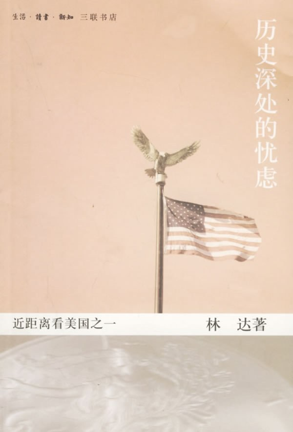

《历史深处的忧虑》

总体观点
林达“近距离看美国”系列的开山之作《历史深处的忧虑》，以旅美华人的亲身体验和书信体形式，向当代中文世界系统平实地普及了美国宪政制度与法治精神的底层机理。
核心命题：美国政治文明的核心不是选拔高大全的救世主，而是源自立宪先贤对“政府权力与国家暴力”深入骨髓的永恒忧虑。整个宪政制度的架构设计，本质上是一套防止公权力侵害公民个人自由与私有财产的严密防御工事。
全书以辛普森涉嫌杀妻案的世纪大审判为主线，深入剖析了言论自由的第一修正案代价、持枪权与反抗暴政的逻辑、非法证据排除规则等经典议题，揭示了现代法治“宁纵勿枉”背后的程序正义真谛。
核心观点
-
1. 程序正义的价值，远在追求个案的实体正义之上
现代法治宁可放过个别有罪的凶手，也绝不容许司法机关通过刑讯逼供或违法搜查获取证据，以防公权力变成脱缰怪兽。
辛普森案中辩方梦之队律师抓住警方涉嫌伪造血迹手套证据和违规翻墙搜查的重大瑕疵，迫使法官将关键证据排除，最终陪审团宣判其无罪。 -
2. 宪法第一修正案的设立，是为了保护刺耳甚至极端丑恶的言论
言论自由的核心不是保护人说好话的自由，而是保护最不受欢迎、最偏激的异见表达不被国家机器封杀。
臭名昭著的白人至上主义三K党在黑人社区门口举行挑衅集会，只要没有引发清晰而即刻的暴力危险，警方甚至必须在宪法要求下为其提供游行安保。 -
3. 个人持枪权的宪法根基，是对国家暴力垄断的终极防范
美国第二修正案允许民众持枪，初衷不仅是为了防身自卫，更是为了在政府彻底走向法西斯专制时赋予人民反抗暴政的最后实体力量。
剖析美国控枪与持枪拉锯战，指出争论的本质不是治安技术问题，而是关于民间武力与国家专制防范的宪政哲学死结。 -
4. “风能进，雨能进，国王不能进”的私有产权与隐私堡垒
宪法第四修正案严格限制警察的搜查与扣押权力；公民的私人住宅是不可侵犯的城堡，没有法官签署的搜查令警察踏入一步即为违法。
警察怀疑屋里藏有毒品但未申请到搜查令，哪怕亲眼从窗户看到白粉也不能破门而入，否则查获的毒品在法庭上全部视为非法证据予以废弃。 -
5. 媒体监督的铠甲是“真实恶意原则”
为了保障媒体对公权力和公众人物的大胆监督，《纽约时报》诉沙利文案确立了原则：除非官员能证明媒体存在明知虚假而故意陷害的蓄意恶意，否则轻微报道失实免于诽谤定罪。
地方警长控告报纸在广告刊登中出现个别事实错误损害其名誉，最高法院判定保障对公共官员的激烈批评是民主社会不可或缺的新闻自由空气。 -
6. 陪审团制度将司法生杀大权交还给没有任何法律背景的普通百姓
十二位随机抽取的普通公民不看法律条文高深术语，仅凭常识和对公诉方“排除合理怀疑”举证标准进行裁决，防止职业司法官僚营私舞弊。
辛普森案十二位来自不同种族阶层的普通陪审员，在长达九个月的隔离听审中认真甄别每一份证据，行使了宪法赋予公民的最高司法裁判权。
全书结构
-
移民、移民
讲述初抵大洋彼岸的文化震撼，记录形形色色来自全世界的移民群体如何在这片土地上落地生根，引出美国作为移民熔炉的多元底色。
在语言不通的廉价公寓里，各国移民在超市收银台前手忙脚乱清点美分硬币，共同构成了美利坚生生不息的草根图景。 -
费解的国家
对比中美两国在思维习惯与权力观念上的剧烈反差，引出国人对美国社会“表面松散无政府、底层法治极严密”的认知困惑。
美国人平时连邻居多伐一棵树都会报警打官司，但对联邦政府和总统却时刻投以怀疑、嘲弄甚至极其不信任的目光。 -
三K党的故事
深入探讨美国宪法第一修正案的极限边界：为何哪怕是鼓吹极端种族仇恨的三K党，也拥有在阳光下穿白袍游行的合法言论自由。
小镇法院判决允许新纳粹和三K党在犹太人聚集区和平游行，法官指出保护自由的唯一方法是容忍那些让你厌恶透顶的声音。 -
肥皂箱上的讲坛
回溯街头肥皂箱演讲的传统，解析“思想的自由市场”理论——对抗错误言论的武器不是警察封口，而是更多自由竞争的言论。
任何人搬一只装肥皂的破木箱站在街角，就可以公开大骂现任总统而无需担心特工抓捕，展现了言论自由的草根底线。 -
氢弹秘密
剖析《进步》杂志试图公开氢弹制造原理文章引发的宪法诉讼案，探讨国家安全与新闻自由发生终极火拼时的司法博弈。
联邦政府以国家安全机密为由紧急申请法院禁令封杀杂志，但在民间学者证明所有资料均来自公开图书馆后，政府最终撤诉。 -
诽谤罪的故事
详述改变美国新闻史的“沙利文案”，解析最高法院如何确立“真实恶意原则”，为新闻记者监督公权力提供免遭诽谤起诉的坚固防弹衣。
阿拉巴马州警长因报纸广告中个别细节失实索赔五十万美元，最高法院一致裁决如果对政府官员的批评不容许微小错误，媒体就会陷入噤若寒蝉。 -
总统请我入党？
以作者收到白宫募捐信与两党政客竞选信件的幽默经历，解构美国两党政治的非严密组织性与选民的完全自由自主。
普通美国人根本没有组织关系或户口档案，只要在投票日走进投票站临时勾选，随时可以成为民主党、共和党或独立选民。 -
枪在谁手里
全面阐释美国第二修正案持枪权的宪政哲学渊源，指出民间持枪不仅是为了防范歹徒，更是国父们留给人民反抗专制政府的最后保险栓。
回顾北美独立战争之初，正是各州平民猎户手持自家燧发步枪在列克星敦打响了反抗英王正规军暴政的第一枪。 -
家就是一个城堡
解析宪法第四修正案对公民私宅、人身与隐私权的严密防护，阐释为何警方非法搜查获取的哪怕致命物证也必须当庭销毁废弃。
辛普森案中福尔曼警官因未经批准擅自翻越辛普森豪宅院墙寻找手套，直接被辩护律师抓住把柄抨击搜查违法，使检方陷入被动。 -
辛普森怎么引起了我的兴趣
全景拉开1994年辛普森涉嫌杀妻案的世纪大审判序幕，介绍这位美式橄榄球超级巨星、好莱坞偶像的特殊身份与案件背景。
辛普森驾驶白色福特野马在洛杉矶高速公路上慢速逃亡，数十架直升机盘旋直播，全美九千万人放下工作同步观看这场现实大戏。 -
公平才有看头
深入辛普森案的法庭交锋现场，解析对抗制审判（Adversarial System）的精妙构架：法官充当消极中立裁判，控辩双方势均力敌拼杀。
辩方组建由全美顶尖法学泰斗与刑辩大师组成的“梦之队”律师团，自费聘请全美顶尖法医病理学家李昌钰对检方现场勘查全面挑刺。 -
检察官输了
还原庭审高潮时刻的惊天逆转：检方让辛普森当众试戴血手套失败，加之关键证人福尔曼警官涉嫌种族歧视谎言被录音当场揭穿。
辛普森在陪审团面前费尽力气也无法把缩水的血手套套进手掌，辩护律师科克伦留下法庭名言：“如果手套套不进，你就必须宣判无罪。” -
世纪大审判的告诫
剖析辛普森被判无罪后全美社会的两极撕裂反应，揭示现代法治“宁可放过一千个坏人，不可错杀一个好人”的沉重制度代价与深层忧虑。
判决宣读瞬间，电视镜头前几乎所有黑人欢呼雀跃，而绝大多数白人神情错愕沮丧，暴露出美国司法体系背后根深蒂固的种族互不信任。 -
百万黑人大游行
记录1995年华盛顿特区爆发的百万黑人男性大集会，探讨黑人社群面对家庭解体、犯罪率高企等内在危机时的反思与自救呼唤。
百万黑人男子在国家广场紧紧拥抱，立誓告别毒品与暴力、回到家中承担起作为父亲与丈夫的家庭责任，展现了惊人的集体自律。 -
他们就是美国人
总结全书，通过对一系列美国法治与社会细节的审视，勾勒出普通美国人在狂热与理性、自由与秩序之间艰难行走的真实肖像。
林达在信末写道：美国绝不是人间天堂，但这套充满忧虑的宪政机器，用笨拙而坚定的程序防范着每一个可能出现的暴君与独裁者。